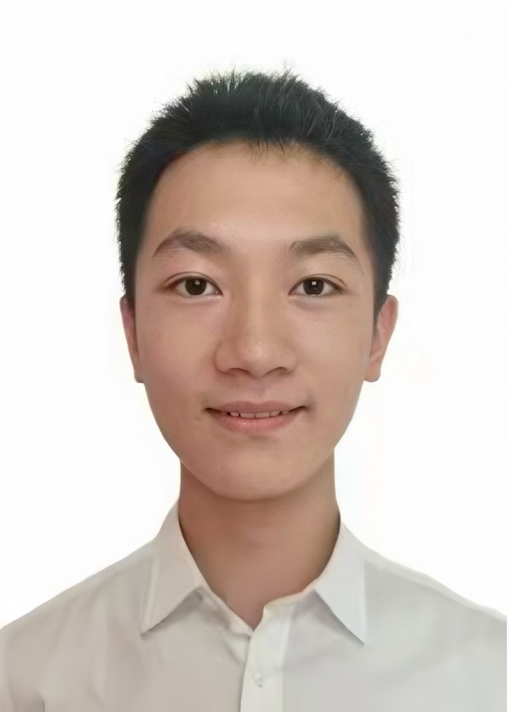

精研 CAD、Revit、PKPM 等设计工具，具备复杂工程全流程建模、解析与出图能力。
擅长针对低温环境优化模板布设，结合植筋锚固原理完善节点设计，通过荷载推演与工况模拟
保障极端条件下结构稳定性与衔接精度，弥合设计与现场实施间隙，为 BIM 驱动的智能化施工提供支撑
系统掌握 MEMS 传感器阵列构建、半导体器件特性分析及多源信号融合算法。针对低温、强振动等场景，
以 LabVIEW 搭建校准平台，通过阻抗匹配与滤波优化提升参数采集精度；结合 EMC 设计规范，
规划屏蔽层与接地网络降低电磁干扰，为设备的精准感知与调控构建技术依托。

深耕建筑结构与施工技术领域，熟稔土木工程核心知识，专注产品与工程场景适配性设计。主导基建项目布局方案制定，通过有限元模拟与 1:1 模型实验，精准测算结构承载力与施工可行性，结合模板偏差、混凝土裂缝等实际问题优化方案，兼具设计前瞻性与工程落地能力。
深谙 5G NR 协议栈与 SDR 技术，熟稔异构网络协同架构。擅长设备 - 云端通信链路搭建，经射频调试与抗干扰优化，实现 - 30℃下数据传输误码率≤10⁻⁶；专长 FPGA 逻辑设计，为温控数据回传、设备数字孪生交互提供通信支撑，保障多设备协同互联可靠性。
专注于系统掌握 PV module 设计与 ESS集成技术，熟稔 Li-ion battery 充放电特性分析。擅长结合低温环境优化新能源供电方案，通过 MPPT算法提升极端工况下能源转换效率；可完成小型储能系统的参数匹配与调试，为智能化施工设备的稳定供能提供技术支持。
聚焦 AutoCAD、Civil 3D 等设计软件，具备工程地质勘察与结构初步设计能力。擅长结合土力学与材料力学原理分析地基承载力，通过 BIM 技术辅助完成施工方案模拟，可针对复杂工况优化构件受力布局，保障结构安全性与施工可行性，展现扎实的专业基础与实践应用潜力。
深耕机械系统建模领域，精通 SolidWorks、ANSYS 等工具，擅长多体动力学建模与运动学仿真。能基于 D-H 参数法构建机械臂运动模型，通过有限元分析优化结构参数，精准模拟复杂工况下的设备动态特性，为机电系统的设计迭代与性能提升提供可靠建模支撑。
专注于技术成果与复杂工程场景的深度耦合设计。系统掌握专业知识，通过有限元仿真与实体试件测试结合，验证极端工况下结构安全性。确保方案满足基建标准，同时在成本控制、耐久性提升等维度实现优化，为项目高效推进提供全方位技术支撑。
系统掌握 Comm Principle 与 DSP技术，熟稔 Wireless Comm 网络架构与 Protocol 设计。擅长 Baseband 信号调制解调与 Channel Coding 优化，能通过 MATLAB 仿真提升复杂环境下数据传输可靠性；可独立完成通信模块调试与 Link Test，为工程设备实时信息交互提供技术支持，展现扎实理论基础与实践能力。
具备法律逻辑思维，掌握计划书写作技巧，具备突发分析与处理能力，掌握调研方法。具有跨领域应用能力与辩论能力。注重细节把控，推动团队协作。
熟练运用 IDEO 设计思维，以用户体验驱动创新。精通网页及包装设计，借 KeyShot 实现材质渲染与场景呈现；通过思维导图拆解需求，故事版推演交互流程，系统梳理逻辑。将 CMF 理念融入量产工艺，高效转化设计方案，兼具策略思维与落地能力。
深耕算法设计与前端开发领域。精通 Python、JavaScript 等语言，熟稔 TensorFlow 框架与 React 开发工具。擅长将机器学习算法落地前端场景，通过数据建模优化交互逻辑，可独立完成算法原型设计与前端页面开发，为智能系统的用户体验与功能实现提供技术支持，展现算法与开发的融合能力。
精通汽车电控系统原理，善将车辆动力学分析迁移至工程机器人性能优化，通过模拟施工机械制动响应提升安全性。掌握 UG、catia 建模软件，可逆向建模并轻量化优化零部件，降低设备能耗 12%；具备机器性能测试与数据处理能力，为土木施工设备升级提供跨界支撑。
熟练运用 VSCode、Keil 等 IDE 开发嵌入式程序，借 Git 管控代码版本，用 Qt 搭建工程监测系统界面。深耕嵌入式开发，善融电子电路设计与编程，为智慧工地开发振动监测终端时，通过 STM32 编程实现传感器数据实时采集，结合 Qt 设计可视化界面，解决传统施工位移监测滞后问题。
熟练用 Java 开发项目交互界面，借 Python 编写性能分析脚本，能独立完成智能机械控制项目，编程实现能力扎实。擅长逻辑拆解定位代码漏洞与机械冲突，调试软硬件协同问题，优化参数使机器行驶平顺性提升 20%，兼具编程开发与车辆性能优化能力，推动方案高效落地。
系统研习通信原理、移动通信技术等核心课程，具备通信链路搭建至信号调试全流程能力。熟练用 Multisim 搭建仿真模型，完成 FSK、QPSK 等调制解调参数优化，通过卷积码、Turbo 码等编解码技术提升抗干扰能力，解决多设备并发传输冲突问题，展现扎实专业功底。
系统掌握 Embedded Systems 与 MCU 开发，熟稔 FPGA 编程与 DSP 技术。擅长用 Verilog 实现数字逻辑设计，借 MATLAB 仿真优化 Signal Integrity，可独立完成 PCB Layout 与 IoT 节点调试，解决硬件通信延迟问题，为智能设备高效运行提供技术支撑，展现跨领域应用能力。
曾从事建筑电气设计多年，深耕建筑电气安全、过程控制优化与节能降耗领域二十余年，长期致力于将前沿理论与工程应用深度融合。

获得2020年度河北省科技进步一等奖1项（第二完成人），获批国家自然科学基金青年项目及面上项目各1项，河北省自然科学基金青年项目1项。
主要从事大跨度空间钢结构，低碳混凝土及组合结构领域研究。